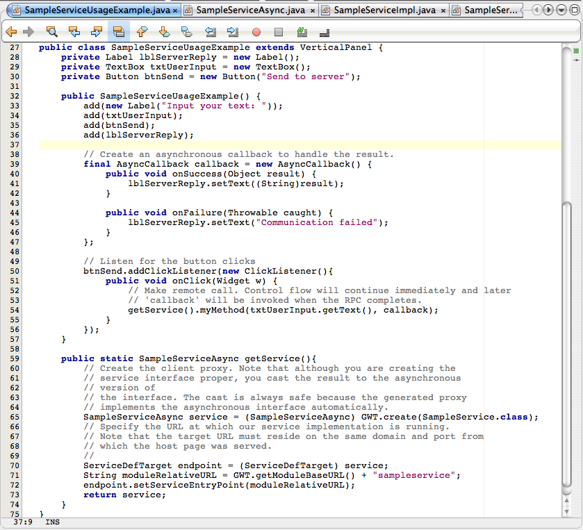
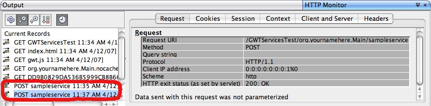

Creating GWT RPC Services Tutorial
This tutorial assumes you are already familiar with the concept of
Remote Procedure Calling in GWT using Services
.
-
Create a new GWT-enabled web project
-
Choose to create a new GWT service
(
File-New File... menu command)

-
Set service name. Choose to create a usage example class.

-
Take a look at the generated files:

-
Modify your entry point class to add the sample component to
the root pane:

-
Run the project and try the page:

-
Note that requests sent by the JavaScript client
to the servlet can be examined in the
HTTP Monitor window:
